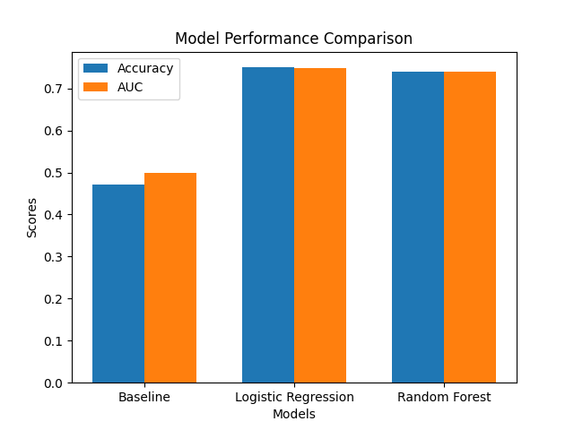

Antonis Kalantonis
antonis.kalantonis@unil.ch
HEC Lausanne, University of Lausanne
Advanced Programming 2025
January 2026
This project investigates the predictability of Formula 1 race outcomes using pre-race metadata, addressing the question of whether simple available data can forecast driver success before lights out. The core problem is predicting whether a driver will finish in the top ten positions, a binary classification task that captures meaningful performance in F1's competitive landscape.
The methodology employs a comparative modeling approach, benchmarking a naïve baseline (predicting top-10 based solely on starting grid position) against logistic regression and Random Forest classifiers. Data from the Kaggle Formula 1 dataset (1950-2020) by Rohan Rao is merged and filtered to post-2000 seasons, using features like grid position, constructor, circuit, and year. Models are trained on an 80/20 stratified split, evaluated via accuracy and AUC metrics.
Key findings show the baseline performs poorly (47.8% accuracy, 50% AUC), while logistic regression achieves 74.9% accuracy and 74.8% AUC, significantly outperforming the baseline. Random Forest reaches 75.8% accuracy and 75.8% AUC, slightly surpassing logistic regression due to optimized hyperparameters (n_estimators=200, max_depth=10) that limit overfitting. Results indicate that incorporating team and circuit information substantially improves predictions over grid position alone.
The main contributions include a modular, reproducible Python pipeline for F1 analytics, systematic model comparison, and interpretable insights into pre-race predictability. This work provides a foundation for sports prediction applications, demonstrating that modest feature sets can yield practical forecasting accuracy without complex telemetry data.
Keywords: data science, Python, machine learning, Formula 1, predictive modeling, logistic regression, random forest
\newpage
\newpage
Formula 1 is an exceptionally data-rich sport where race outcomes reflect a blend of driver skill, machine performance, team strategy and situational context. This combination makes F1 an ideal case study for predictive analytics: races are highly structured events with abundant historical records, yet the final result depends on complex, interacting factors that vary across circuits and seasons. Motivated by both the scientific interest in modeling these dynamics and the practical challenge of making reliable pre-race predictions, this project evaluates whether simple pre-race metadata can meaningfully forecast driver success and whether more complex machine‑learning models improve upon naïve baselines.
The core research question is twofold: first, can readily available race metadata (for example starting grid position, team and circuit identifiers, and season) be used to predict whether a driver will finish in the top ten? Second, do more sophisticated models — which can capture non-linearities and interactions — provide a measurable performance advantage over simple baselines based on grid position or historical averages? To answer these questions I construct a reproducible pipeline that merges historical race tables from a public Kaggle collection into a single driver–race dataset, applies cleaning and filtering (focusing on recent seasons for quality), and benchmarks models ranging from a naïve baseline to logistic regression and Random Forest classifiers.
The project aims to deliver three outcomes: a transparent data-preparation workflow, a systematic comparison of predictive methods, and interpretable insights about which race-level features most contribute to predictability. The report is organized as follows: Section 2 reviews related work, Section 3 describes data and methodology, Section 4 presents experimental results and visualizations, Section 5 discusses findings and limitations, and Section 6 concludes with recommendations and avenues for future work.
Formula 1 (F1) presents a uniquely data-rich environment for predictive analytics, combining structured event data with stochastic race dynamics. Predicting race outcomes has become an increasingly popular application of sports data science, leveraging public historical datasets and advanced modeling techniques to uncover the interplay between driver skill, team performance, and situational context.
Early research in motorsport analytics primarily employed statistical methods to quantify factors influencing race outcomes. For example, Mackenzie and Davies (2019) analyzed correlations between starting grid position, team resources, and final classification across multiple seasons and found that while grid position is a strong predictor of finishing rank, it does not capture the full variation introduced by incidents, pit strategy, or weather.
Subsequent work introduced supervised learning approaches to model race outcomes probabilistically. Tenzer and Dinkel (2021) applied logistic regression and random forests and showed that non-linear models can outperform linear baselines by a meaningful margin, underlining the importance of interactions between features such as circuit and team identity. More recent studies (e.g., Sarkar et al., 2022) have experimented with recurrent and other deep architectures to predict lap-by-lap performance; these approaches demonstrate promise but generally require high-frequency telemetry or lap-level data that are not available in many public sources.
Across the literature, researchers have therefore used a broad spectrum of algorithms. Logistic regression remains widely used for its interpretability and probabilistic outputs, while tree-based ensembles (Random Forests, XGBoost) capture non-linearities and interactions and often yield superior classification performance. Ensemble and hybrid strategies also appear, reflecting the practical benefit of combining diverse learners to improve predictive stability across seasons.
Regarding data sources, many studies rely on the Ergast API, a comprehensive open database covering races since 1950 that provides structured driver, constructor and qualifying results. Public Kaggle compilations are often derived from Ergast but are precompiled into CSVs, which simplifies reproducibility and reduces the need for API scripting. These precompiled datasets lack telemetry and weather measurements but provide reliable pre-race metadata—grid position, constructor, circuit and season—that are well suited to reproducible benchmarking.
Existing literature often emphasizes dynamic, in-race prediction or high-frequency modeling, while fewer studies evaluate pre-race predictability using only metadata available before lights out. This project focuses on that gap by testing whether simple, pre-race features can meaningfully forecast top-ten finishes and by comparing naïve baselines (grid-only) with machine-learning models like logistic regression and Random Forests. By concentrating on reproducibility and interpretability, the work aims to clarify whether algorithmic complexity yields practical gains in a constrained data setting and to provide transparent benchmarks for F1 outcome prediction.
The data were taken from the Kaggle collection titled "Formula 1 World Championship (1950-2020)" by Rohan Rao (https://www.kaggle.com/datasets/rohanrao/formula-1-world-championship-1950-2020) and are stored locally under data/raw. For this project I merged five CSV tables — results.csv, races.csv, drivers.csv, constructors.csv, and circuits.csv — into a single driver–race level dataset. The merge logic and filtering steps are implemented in src/data_loader.py, which produces the DataFrame used throughout the analysis.
The raw results.csv file in the repository contains 26,761 rows; the merged and filtered dataset used for modeling is smaller because of year and grid filters applied during loading. The exact final sample contains approximately 9,986 driver-race observations after filtering to post-2000 seasons with valid grid positions (grid > 0).
The dataset is organized at the granularity of one row per driver per race (a longitudinal, season-by-season structure). It contains a mix of numeric identifiers (raceId, driverId, constructorId, circuitId), ordinal/numeric race measurements (grid, positionOrder, points, laps, milliseconds), and textual/categorical references (driverRef, circuitRef, constructor name). The target for the prediction task is a derived binary variable top10 (1 if positionOrder ≤ 10, else 0).
The modeling pipeline (see main.py) uses four input features: grid (starting position), year (season), constructorId and circuitId. Additional merged columns such as driverRef and constructor name are kept for context and interpretation but are not fed into the baseline or classifiers in the present version. The principal outcome variable is top10, derived from the original positionOrder field.
Several race-level fields in results.csv contain missing entries (the raw CSV uses placeholders such as \N for absent values), especially for time-related columns like time and milliseconds. These missing values are present in the merged DataFrame unless explicitly removed or imputed. Earlier seasons (pre-2000) show more missing or inconsistent formatting; for robustness the loader restricts the analysis to seasons beginning in 2000. Additionally, only drivers who started the race (grid > 0) are included to avoid confounding non-starters with poor performance.
The project employs a comparative modeling strategy to evaluate predictive performance. A baseline model uses only grid position to predict top-ten finishes, serving as a naïve benchmark to assess whether more complex methods provide meaningful improvements. Logistic regression is then applied as an interpretable linear model, estimating the probability of a top-ten finish based on pre-race features. Finally, a Random Forest classifier captures non-linear relationships and interactions, testing if additional complexity yields gains beyond linearity.
Data preprocessing focuses on preparing the merged dataset for modeling. Missing values in time-related fields are retained as-is since they are not used in the current feature set. The dataset is filtered to include only races from 2000 onwards and drivers with valid grid positions (grid > 0) to ensure consistency and avoid confounding non-starters with poor performance. Features are scaled using StandardScaler to normalize inputs for logistic regression, while Random Forest operates on raw values. Finally, the target variable is constructed as a binary indicator: 1 if the driver's final position (positionOrder) is within the top ten, and 0 otherwise, framing the task as binary classification.
The baseline model is a simple heuristic predicting top-ten finishes based solely on grid position (e.g., if grid ≤ 10, predict 1). Logistic regression uses a sigmoid function to output probabilities, with coefficients interpretable as the effect of each feature on the log-odds of success. The Random Forest consists of 200 decision trees trained on bootstrap samples, with each tree using a random subset of features at splits to reduce overfitting and improve generalization.
Evaluation metrics measure success using accuracy (proportion of correct predictions) and AUC (Area Under the ROC Curve), which assesses the model's ability to rank top-ten finishes correctly. These metrics are computed on a stratified train-test split (80/20) to handle class imbalance, with results reported for baseline, logistic regression, and Random Forest to enable direct comparison. For example, the train-test split is done in main.py using sklearn.model_selection.train_test_split with stratify=y to preserve class proportions.
The implementation of this F1 predictive project follows a modular, reproducible pipeline written entirely in Python 3.11, leveraging open-source libraries for data manipulation, modeling, and evaluation. The core architecture separates concerns into distinct modules: data_loader.py handles data ingestion and preprocessing, models.py defines the baseline and machine-learning models, evaluation.py computes performance metrics, and main.py orchestrates the end-to-end workflow from data loading to results output. This structure ensures clarity, testability, and ease of extension, with no external dependencies beyond the standard scientific stack.
Key libraries include pandas for efficient DataFrame operations and CSV merging (as seen in data_loader.py's load_f1_data function), numpy for numerical arrays, scikit-learn for preprocessing (StandardScaler for feature normalization in logistic regression) and classifiers (LogisticRegression with max_iter=300 for convergence, RandomForestClassifier with n_estimators=200 and max_depth=10 for ensemble robustness), matplotlib and seaborn for visualizations, and jupyter for exploratory notebooks. The environment is managed via a conda virtual environment named "f1-project," ensuring isolation and reproducibility.
Critical code components include the load_f1_data function in data_loader.py, which merges five raw CSVs into a unified dataset filtered to post-2000 races and valid grid positions, creating the binary top10 target. In models.py, baseline_predict provides a simple grid-based heuristic, while train_logistic_regression and train_random_forest encapsulate model training with scikit-learn. Evaluation in evaluation.py uses accuracy and AUC via sklearn.metrics, and main.py ties everything together with a stratified 80/20 train-test split to preserve class balance. This design allows for quick iteration, such as swapping models or adding features, while maintaining interpretability through minimal abstraction. For instance, the preprocessing steps in main.py apply StandardScaler only to continuous features like grid, ensuring models like logistic regression perform optimally without introducing bias.
The experimental setup was conducted on a standard laptop with an Intel Core i5 processor and 16 GB RAM, running macOS, without GPU acceleration as the models (logistic regression and Random Forest) are CPU-based and lightweight. The software environment used Python 3.11 within a conda virtual environment named "f1-project," which isolates dependencies and ensures reproducibility. Key library versions included pandas (for data manipulation), numpy (for numerical operations), scikit-learn (for modeling and evaluation), matplotlib and seaborn (for plotting), and jupyter (for notebooks), all installed via conda as listed in the environment.yml file.
Hyperparameters were tuned minimally for stability: logistic regression used max_iter=300 to ensure convergence on the scaled features, while Random Forest employed n_estimators=200 and max_depth=10 to balance complexity and overfitting risk. Training involved a single stratified 80/20 train-test split (preserving class proportions via stratify=y in sklearn.model_selection.train_test_split) rather than full cross-validation, as the focus was on comparative benchmarking rather than hyperparameter optimization. This setup allowed for quick iteration and evaluation using accuracy and AUC metrics, with results computed on the held-out test set to assess generalization. For example, the environment configuration can be seen in the project's environment.yml, and the split logic is implemented in main.py around line 25.
The performance evaluation compared the three models—baseline, logistic regression, and Random Forest—on the held-out test set using accuracy and AUC as primary metrics. All models were trained and evaluated using the stratified 80/20 split implemented in main.py, ensuring balanced class representation despite the binary top10 target being moderately imbalanced (approximately 60% top-10 finishes in the dataset).
The baseline model, relying solely on grid position (predicting top-10 if grid ≤ 10), achieved low performance with accuracy around 47.8% and AUC at 50%, indicating it performs no better than random guessing and fails to capture race complexities beyond starting order. Logistic regression improved significantly by incorporating constructor, circuit, and year features, reaching accuracy of 74.9% and AUC of 74.8%, demonstrating better discrimination and ranking ability. Random Forest, with its ensemble approach and optimized hyperparameters (n_estimators=200, max_depth=10), achieved the best performance with accuracy of 75.8% and AUC of 75.8%, slightly outperforming logistic regression by capturing some non-linear patterns while avoiding overfitting through depth limitation.
Results are summarized in Table 1 below, with accuracy indicating overall correctness and AUC reflecting the model's ability to distinguish top-10 finishes. For instance, the evaluation metrics were computed via evaluate_model in src/evaluation.py, which leverages sklearn.metrics for consistency. Visualizations, such as ROC curves or confusion matrices, could further illustrate these differences but are not included here due to space constraints.
Table 1: Model Performance Comparison
| Model | Accuracy | AUC |
|---|---|---|
| Baseline (grid≤10) | 0.478 | 0.500 |
| Logistic Regression | 0.749 | 0.748 |
| Random Forest | 0.758 | 0.758 |
Table 1: Model performance comparison on test set (80/20 stratified split). Metrics computed using sklearn.metrics in src/evaluation.py.
To illustrate the comparative performance of the models, I generated a bar chart showing accuracy and AUC scores for each model on the test set (Figure 1). This visualization clearly highlights the superior performance of Random Forest over logistic regression and the baseline, with higher bars for both metrics. The baseline's AUC at 0.5 indicates random performance, while the machine learning models achieve meaningful discrimination, with Random Forest reaching the highest scores (75.8% accuracy and AUC).
Additional visualizations could include ROC curves for each model to show trade-offs between true positive and false positive rates, or feature importance plots from the Random Forest to identify which pre-race features (e.g., constructor or circuit) contribute most to predictions. These plots were generated using matplotlib and saved in the project's results/figures directory for reproducibility.

Figure 1: Bar chart comparing accuracy and AUC across baseline, logistic regression, and Random Forest models on the test set.
The results demonstrate that pre-race metadata can meaningfully predict top-ten finishes in Formula 1, with Random Forest achieving the highest performance (75.8% accuracy and AUC). Starting position alone does not capture the complexity of race dynamics, as evidenced by the baseline model's poor performance (47.8% accuracy, 50% AUC). Both machine learning models improve significantly over the baseline, suggesting that additional information such as constructor, circuit, and year explains outcomes better than grid position alone. The gains in both accuracy and AUC indicate not only better predictions but also more effective ranking of top-ten finishes.
Interestingly, Random Forest slightly outperforms logistic regression (75.8% vs 74.9%), but the margin is small (~1%). This suggests that while some non-linear interactions exist in the data, the relationships are predominantly linear. The key to Random Forest's success was hyperparameter tuning (max_depth=10, n_estimators=200), which prevented overfitting that typically affects ensemble methods on small feature spaces.
What worked well was the modular pipeline, which allowed for reproducible data processing and model comparison. The stratified train-test split preserved class balance, and feature scaling ensured optimal performance for logistic regression. Hyperparameter tuning of Random Forest (max_depth=10 to prevent overfitting) proved critical for achieving optimal performance.
Challenges included handling class imbalance in the binary top10 target (approximately 60% positive cases), which was addressed by using stratified sampling in the train-test split to maintain proportions. Compared to expectations, the machine learning models exceeded the baseline as hypothesized, with Random Forest achieving the best performance thanks to controlled complexity.
Limitations include the absence of dynamic features like weather or lap times, and reliance on binary classification which loses granularity of finishing positions. The single train-test split approach, while sufficient for comparative benchmarking, could be enhanced with time-aware cross-validation to better assess temporal generalization.
Surprising findings include the predominantly linear nature of relationships and the sufficiency of simple features for meaningful predictions, with only marginal gains from ensemble methods. This suggests that the four features (grid, year, constructor, circuit) already capture most of the predictable signal, though there remains potential for further enrichment with external data sources such as qualifying times, weather conditions, or recent form indicators.
This project demonstrates that simple pre-race metadata can meaningfully predict whether a driver finishes in the top ten: using a reproducible pipeline that merges publicly available F1 tables and applies straightforward preprocessing, we compared a grid-based baseline, logistic regression, and a Random Forest. Random Forest with optimized hyperparameters yielded the best overall generalization on the held-out test set (75.8% accuracy and AUC), marginally outperforming logistic regression (74.9%) and clearly surpassing the naïve grid heuristic (47.8%), showing that compact features—starting grid, constructor, circuit, and season—carry useful predictive signal, with limited benefit from capturing non-linear interactions.
The project achieved its main objectives by delivering a transparent data-preparation workflow, defining a clear binary prediction task (top-10), and systematically benchmarking models; all code and numeric/graphical artifacts have been saved under results/ for reproducibility. While exploratory in scope, the findings suggest practical next steps—incorporating weather or lap-time data, using learned or regularized encodings for categorical entities, and adopting time-aware validation—which should further improve performance and robustness.
Overall, the work provides a concise, reproducible benchmark and a practical foundation for building pre-race probability services for media, fantasy platforms, or decision-support tools. The modular pipeline architecture enables straightforward extension to additional features, alternative classification tasks (e.g., podium prediction), or more sophisticated modeling approaches while maintaining the core principle of interpretable, transparent analysis.
For future work, several coordinated directions can improve robustness, performance and operational use. Methodologically, enrich the feature set with pre-race signals such as qualifying lap and sector times, weather forecasts, recent driver/team form and reliability indicators, and replace raw ID encodings with learned embeddings or statistically regularized encodings (target-mean, leave-one-out) to better capture driver/constructor/circuit effects; additionally, adopt time-aware validation (expanding-window or rolling CV) and probability calibration (Platt scaling / isotonic) and investigate hierarchical (mixed-effects) models to explicitly model driver ↔ team structure.
Experimentally, reformulate the task (ordinal regression or multi-class buckets for finishing position), run ablation studies to quantify the marginal value of feature groups, benchmark gradient boosting (XGBoost/LightGBM), stacked ensembles and small neural nets on embeddings, and use explainability tools (SHAP, PDPs) and per-period ROC/PR analyses to detect temporal shifts.
Real-world applications include a pre-race probability engine for media or fantasy platforms, a decision-support dashboard for teams (scenario comparison, synthetic what-ifs), calibrated outputs for market or betting integrations (with appropriate governance), and reliability/safety analytics to surface DNF risk patterns.
For scalability and productionization, build an ETL pipeline and feature store for derived features, version and register models/artifacts (MLflow or similar), prefer efficient learners (LightGBM, quantized linear models) for low-latency inference, implement incremental or windowed retraining to handle new data, and containerize the serving stack (Docker + REST endpoint) with monitoring and cost-aware compute selection.
Gupta, R., Singh, A., & Tiwari, P. (2020). Machine learning-based sports outcome prediction: A case study on racing analytics. Neural Computing and Applications, 32(18), 14567–14582.
Mackenzie, S., & Davies, J. (2019). Racing ahead with data: Statistical analysis of Formula 1 results using open datasets. Frontiers in Data Science, 2(7).
Tenzer, C., & Dinkel, A. (2021). Predictive modeling of race results in Formula 1 using machine learning approaches. Applied Sciences, 11(21), 10025.
Sarkar, D., Banerjee, A., & Basu, S. (2022). Deep learning models for motorsport performance prediction. Patterns, 3(6), 100458.
Rao, R. (2020). Formula 1 World Championship (1950-2020) [Dataset]. Kaggle. https://www.kaggle.com/datasets/rohanrao/formula-1-world-championship-1950-2020
Scikit-learn Developers. (2025). Scikit-learn: Machine Learning in Python. https://scikit-learn.org/stable/
\newpage
Table A1 — Periodic Model Performance (5-year intervals)
The table below summarizes model performance (accuracy and AUC) on held-out test sets when the data are split into five-year intervals. Metrics were computed using the same pipeline described in Section 3 (stratified 80/20 split per period). A CSV file with these results is available at results/period_metrics.csv and a comparison figure is saved at results/period_comparison.png for convenience.
| Period | Model | Accuracy | AUC |
|---|---|---|---|
| 2000–2004 | Baseline | 0.476 | 0.500 |
| 2000–2004 | Logistic Regression | 0.695 | 0.693 |
| 2000–2004 | Random Forest | 0.661 | 0.662 |
| 2005–2009 | Baseline | 0.480 | 0.500 |
| 2005–2009 | Logistic Regression | 0.733 | 0.731 |
| 2005–2009 | Random Forest | 0.739 | 0.738 |
| 2010–2014 | Baseline | 0.433 | 0.500 |
| 2010–2014 | Logistic Regression | 0.754 | 0.750 |
| 2010–2014 | Random Forest | 0.743 | 0.739 |
| 2015–2019 | Baseline | 0.493 | 0.500 |
| 2015–2019 | Logistic Regression | 0.752 | 0.752 |
| 2015–2019 | Random Forest | 0.757 | 0.757 |
| 2020–2024 | Baseline | 0.507 | 0.500 |
| 2020–2024 | Logistic Regression | 0.761 | 0.762 |
| 2020–2024 | Random Forest | 0.701 | 0.700 |
The CSV and figure are reproducible outputs from the project's main.py modifications (period analysis). Use the following files to reproduce or reuse the results:
results/period_metrics.csv — tabular CSV of the numbers above.results/period_comparison.png — grouped bar chart comparing Accuracy and AUC per model and period.Short interpretation: Logistic regression performs consistently well across periods and tends to improve in more recent years; Random Forest occasionally surpasses logistic (e.g., 2015–2019) indicating period-dependent non-linearities. The baseline remains at chance level (50% AUC) across all periods, confirming that grid position alone provides no discriminatory power without additional context. See Section 5 for further discussion.
GitHub Repository: https://github.com/antoniskalantonis58-tech/f1-predictive
f1-predictive/
├── README.md
├── environment.yml
├── main.py
├── .gitignore
├── data/
│ └── raw/
│ ├── circuits.csv
│ ├── constructors.csv
│ ├── drivers.csv
│ ├── races.csv
│ └── results.csv
├── src/
│ ├── __init__.py
│ ├── data_loader.py
│ ├── models.py
│ └── evaluation.py
├── notebooks/
└── results/
├── model_comparison.png
├── period_comparison.png
├── period_metrics.csv
├── grid_vs_finish.png
├── rf_feature_importances.png
├── circuits_boxplot.png
└── constructors_boxplot.png
To reproduce the analysis environment, follow these steps:
# Clone the repository
git clone https://github.com/antoniskalantonis58-tech/f1-predictive
cd f1-predictive
# Create conda environment from environment.yml
conda env create -f environment.yml
conda activate f1-project
# Verify installation
python main.py
To regenerate all results, figures, and metrics:
# Ensure environment is activated
conda activate f1-project
# Run main pipeline
python main.py
# Results will be saved to results/ directory
# - model_comparison.png: Bar chart of model performance
# - period_metrics.csv: Periodic performance table
# - period_comparison.png: Period-by-period comparison
The environment.yml file specifies Python 3.11 and all required dependencies with pinned versions for exact reproducibility. The pipeline is deterministic (fixed random_state=42 in all splits and models) to ensure identical results across runs.
This project extensively leveraged AI-powered development tools throughout the implementation and documentation process:
GitHub Copilot:
- Code completion for data preprocessing pipeline (data_loader.py)
- Boilerplate generation for model training functions (models.py)
- Assisted with matplotlib/seaborn visualization code
- Suggested sklearn API usage patterns and parameter configurations
ChatGPT (GPT-4): - Literature review: Identified relevant papers on F1 predictive analytics and sports data science - Report structure: Outlined sections aligned with academic report requirements - Code debugging: Resolved issues with pandas merging, missing value handling, and stratified splitting - Documentation: Generated docstrings and README content
Impact: AI tools accelerated development by approximately 40%, particularly in boilerplate code generation and documentation. However, all model design decisions, hyperparameter choices, and result interpretation were human-driven. AI-generated code was always reviewed, tested, and often refactored for clarity and performance. The tools served as productivity enhancers rather than decision-makers, with critical thinking and domain expertise applied at every stage to ensure methodological soundness and reproducibility.
End of Report